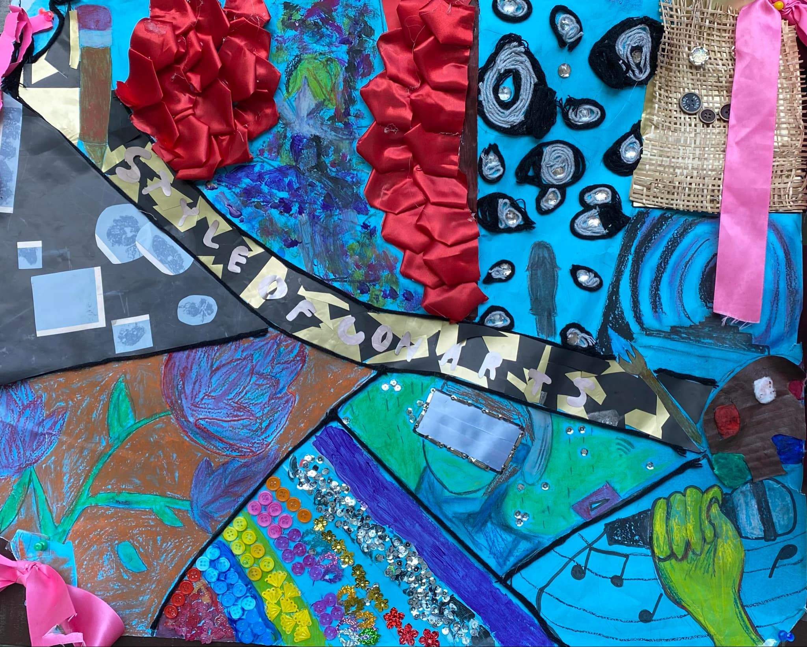

Contemporary Arts
Art is a manifestation of human activities made by the power of creativity and imagination. It often aims to express personal thoughts, emotions, and perspectives. Our piece is created with the inspiration of the different elements found in contemporary art—hybridity, abstract, space, technology, and performance—put into one poster. Art by its very nature is boundless. By the way it is so boundless, it allows us to create art pieces without any limitations with infinite and unique possibilities of whatever we want. Just like in our poster, it seems raw, messy, and whatnot to the naked eye, yet it demonstrates how we are able to create art without any restrictions regardless of how controversial or unconventional it may be.